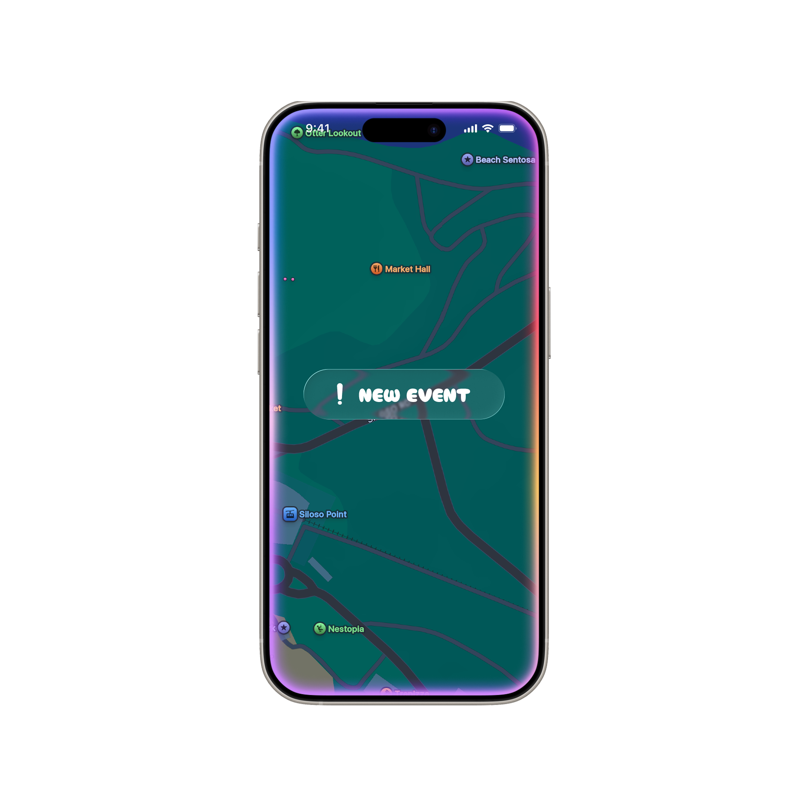

WANDER

Project is currently WIP, Prototype will be up soon. / So much of how we stumble onto events or end up spending time with friends today feels oddly counterintuitive. Instead of meeting people organically, it happens through email invites, Instagram stories, or a Telegram message from friends. Every connection has almost started to feel scheduled, filtered, and distant. Wander came from a desire to rethink how we meet others, and how much intention we bring into showing up.
At its core, Wander encourages exploration of what’s already around you. When the app opens, you’re placed directly onto a map centred on your current location, revealing nearby events and informal hangouts as you scroll across the surface and walk around the area. There’s no feed to scroll through, no algorithm deciding what matters. Just a quiet prompt to look outward instead of inward, and to rediscover spontaneity in the present.

The map is geo-locked to your surroundings. To see what’s happening elsewhere, you have to physically move closer. This small constraint, demarcated by the clouds, is intentional. Instead of encouraging constant movement or planning far ahead, Wander nudges you to build community in spaces you already occupy, like the streets you walk or the neighbourhoods you return to every day.

Somewhere along the way, striking up conversations with strangers became uncomfortable. We began to rely on screens as buffers, mediators or excuses. Wander gently pushes against that. It invites you to step into shared experiences, join events created by others and meet people without the pressure of expectations.

The idea “Not all who wander are lost” is what guides this project. Wandering isn’t about aimlessness, it’s about openness. It’s choosing to engage with the world with curiosity and without overthinking.
Wander isn’t there for you to overengineer your interactions. It’s simply there to create space for discovery to happen again. If you like this interaction, you can try out my Figma prototype.
Maps are from Apple Maps.
December 18, 2025